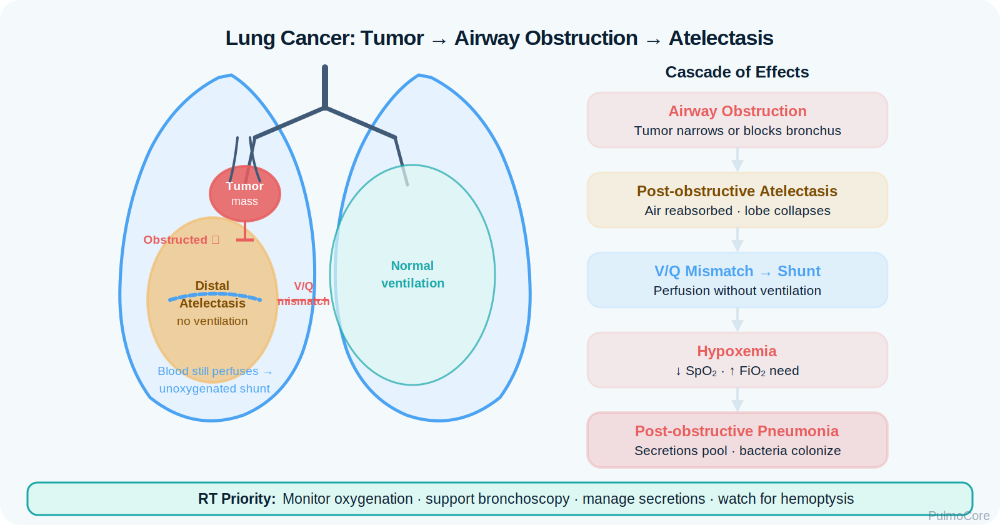
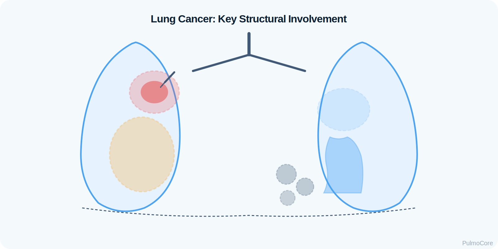
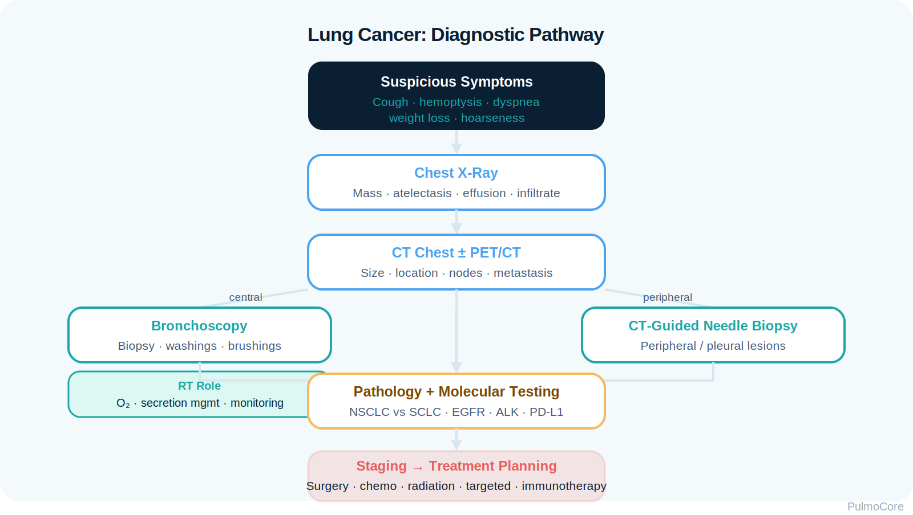

Lung cancer is malignant disease arising in lung tissue or airways that can impair ventilation, gas exchange, airway patency, secretion clearance, and oxygenation. This module focuses on RT-level recognition, diagnostic clues, staging concepts, airway emergencies, treatment effects, supportive care, and escalation priorities.
Category Neoplastic Lung Disease
Estimated Time 30–40 minutes
Level Core RT Knowledge
Learning Objectives
By the end of this lung cancer module, learners should be able to connect tumor growth, airway obstruction, parenchymal involvement, metastasis, diagnostics, treatment effects, and RT escalation priorities.
1. Explain pathophysiology Describe how malignant growth causes airway narrowing, atelectasis, post-obstructive infection, V/Q mismatch, and impaired gas exchange.
2. Compare major types Differentiate non-small cell lung cancer from small cell lung cancer using growth pattern, spread, and treatment implications.
3. Interpret assessment data Use symptoms, imaging clues, bronchoscopy, biopsy, ABGs, SpO₂, and red flags to determine urgency.
4. Escalate appropriately Recognize massive hemoptysis, central airway obstruction, superior vena cava syndrome, pleural effusion, and impending respiratory failure.
Video Overview
2-Minute Lung Cancer Overview
Watch this quick overview before moving into the disease snapshot.
Disease Snapshot
Lung cancer is not one single clinical pattern. Some patients present with chronic cough and weight loss, while others present with airway obstruction, pleural effusion, pneumonia that does not resolve, hemoptysis, or metastatic symptoms. RTs focus on airway, oxygenation, ventilation, secretion clearance, procedure support, and recognition of emergencies.
What it is: Malignant tumor involving lung tissue, bronchi, or metastatic thoracic structures.
Key diagnostic clue: Suspicious mass/nodule on imaging confirmed by tissue diagnosis.
Acute danger: Massive hemoptysis, stridor, central airway obstruction, SVC syndrome, severe hypoxemia.
RT priority: Assess airway patency, oxygen need, ventilation, secretion burden, procedure readiness, and escalation triggers.
RT Clinical Connection
For RTs, lung cancer care often means recognizing when a chronic disease has become an acute airway or oxygenation problem. A patient with lung cancer who develops stridor, large-volume hemoptysis, or rapidly worsening hypoxemia needs urgent escalation.
Board Prep Frame
Immediately associate lung cancer with smoking history, nonresolving pneumonia, hemoptysis, unexplained weight loss, hilar or peripheral masses, pleural effusion, bronchoscopy/biopsy, and red flags such as central airway obstruction.
Quick Pre-Check
Start with the core lung cancer pattern
Which statement best describes the RT-centered concern in lung cancer?
Anatomy & Pathophysiology
Lung cancer may begin in central bronchi or peripheral lung tissue. Tumor growth can narrow airways, invade blood vessels, obstruct lymphatic drainage, collapse distal alveoli, trigger inflammation, or spread to pleura and distant organs.
Carcinogen exposure or genetic mutation → abnormal cell growth → tumor mass → airway/parenchymal/vascular involvement → V/Q mismatch, atelectasis, bleeding, infection, or respiratory failure.
Tumor-airway relationship

How Lung Cancer Causes Breathing Problems
Mechanism
What Happens
Why It Matters
Central airway obstruction
Tumor narrows trachea, mainstem, or lobar bronchus.
Can cause stridor, wheeze, atelectasis, or life-threatening obstruction.
Peripheral mass
Tumor grows in distal lung tissue.
May impair local ventilation and appear as a nodule or mass on imaging.
Post-obstructive atelectasis
Airway blockage prevents ventilation distal to obstruction.
Creates shunt-like physiology and hypoxemia risk.
Post-obstructive pneumonia
Secretions pool behind obstruction.
Can cause fever, sputum, infiltrate, and worsening gas exchange.
Pleural involvement
Malignant effusion may compress lung tissue.
Can cause dyspnea, decreased breath sounds, and restrictive mechanics.
Danger Sign
New stridor, rapidly increasing work of breathing, or large-volume hemoptysis in a lung cancer patient should be treated as an airway emergency until proven otherwise.
Click the Lung Cancer Hotspots
Click each hotspot to reveal how that structure contributes to lung cancer presentation.

Start here: Click all four hotspots to complete this activity.
0 / 4 hotspots reviewed
Etiology, Risk Factors & Prevention Clues
Lung cancer risk is strongly linked with tobacco exposure, but not all lung cancer patients smoke. Other risks include radon, occupational exposures, air pollution, prior radiation, family history, and underlying lung disease.
Risk Factor
Why It Matters
Teaching Focus
Tobacco smoke
Major modifiable risk factor.
Assess pack-years and support cessation.
Radon exposure
Radioactive gas exposure increases risk.
Encourage home testing when relevant.
Asbestos/silica/diesel exposure
Occupational inhalants increase risk.
Ask about work history and PPE.
Prior thoracic radiation
Can increase future malignancy risk.
Review cancer treatment history.
Family history/genetics
May increase risk even in nonsmokers.
Do not dismiss symptoms in nonsmokers.
Sort the Lung Cancer Factors
Choose the best category for each item, then check your answers.
40 pack-year smoking history
Bronchoscopy with biopsy
Radon exposure
Large-volume hemoptysis
Low-dose CT screening for eligible high-risk patients
Complete the sorting activity to continue.
Clinical Manifestations
Lung cancer may be silent early. When symptoms appear, they often reflect local tumor effects, airway involvement, pleural disease, systemic inflammation, or metastatic spread.
Finding Type
What the RT May See
Respiratory symptoms
Persistent cough, dyspnea, wheeze localized to one area, hemoptysis, recurrent pneumonia.
Dyspnea, pleuritic pain, decreased breath sounds, dullness to percussion.
Metastatic clues
Bone pain, neurologic changes, liver involvement, adrenal lesions.
Important Teaching Point
A “new wheeze” that is unilateral, fixed, or not responding like asthma/COPD should raise suspicion for an obstructing lesion or foreign body pattern, especially with hemoptysis or weight loss.
Diagnostics & Assessment
Diagnosis requires imaging to identify suspicious lesions and tissue sampling to confirm malignancy. RTs often support bronchoscopy, oxygen delivery, secretion management, and monitoring during procedures.
Diagnostic pathway

Common Diagnostic Tools
Tool
What It Helps Determine
Chest x-ray
May show mass, atelectasis, effusion, or nonresolving infiltrate.
Chest CT
Defines tumor size, location, nodal involvement, and procedure planning.
PET/CT
Helps identify metabolically active disease and metastasis.
Bronchoscopy
Visualizes central airways and obtains tissue/brushings/washings.
CT-guided needle biopsy
Samples peripheral lesions not reachable by bronchoscopy.
PFTs
Assesses surgical risk and baseline lung function.
ABG/Pulse Oximetry Patterns
Pattern
Meaning
Hypoxemia
May reflect V/Q mismatch, shunt from atelectasis, effusion, pneumonia, or tumor burden.
Hypercapnia
May occur with severe obstruction, fatigue, COPD overlap, or ventilatory failure.
Increased oxygen need
May signal progression, infection, effusion, pulmonary embolism, or treatment toxicity.
Types, Staging Concepts & Screening
Lung cancer classification and staging guide treatment. RTs do not stage independently, but they should understand why tumor type, nodal spread, metastasis, and pulmonary reserve affect care planning.
Category
Typical Pattern
Non-small cell lung cancer
Includes adenocarcinoma, squamous cell carcinoma, and large cell carcinoma; often staged with TNM.
Small cell lung cancer
Often central, aggressive, strongly associated with smoking, and commonly metastatic at diagnosis.
TNM concept
Tumor size/local invasion, nodal involvement, and metastasis determine stage.
Screening concept
Eligible high-risk patients may receive annual low-dose CT screening according to program criteria.
Local disease Symptoms may come from airway obstruction, atelectasis, or local invasion.
Regional spread Hilar/mediastinal nodes may affect staging and compress nearby structures.
Distant metastasis Bone, brain, liver, and adrenal spread changes treatment goals and symptom burden.
Staging Concept Activity
A patient has a lung mass plus confirmed adrenal metastasis. Which staging concept is most important?
Severity & Red Flags
The key question is not only “Does this patient have cancer?” The key question is whether the tumor or treatment has created an immediate airway, oxygenation, or ventilation threat.
Red Flag
Why It Matters
Massive hemoptysis
Can rapidly obstruct the airway and cause asphyxiation.
Stridor or severe unilateral wheeze
Suggests central airway obstruction.
Rapidly worsening hypoxemia
May signal obstruction, effusion, pneumonia, PE, or treatment toxicity.
Facial/neck swelling with dyspnea
Possible superior vena cava syndrome.
New confusion or drowsiness
May indicate hypoxemia, hypercapnia, brain metastasis, or systemic illness.
Post-procedure distress
Consider pneumothorax, bleeding, bronchospasm, or sedation effect.
Management & Treatment
Treatment depends on cancer type, stage, molecular markers, performance status, and pulmonary reserve. RT management focuses on supportive care, procedure support, oxygenation, airway clearance, symptom control, and escalation.
Monitor side effects and changing respiratory status.
Palliative interventions
Stents, thoracentesis, symptom management.
Support airway patency and comfort-focused breathing care.
Acute Lung Cancer Respiratory Escalation Sequence
Select the steps in the best general order for a lung cancer patient with sudden dyspnea and suspected airway compromise.
Assess airway patency, work of breathing, SpO₂, and mental status
Apply oxygen and position for easiest breathing
Notify provider/rapid response for airway red flags
Prepare for imaging, bronchoscopy, suction, or airway intervention
Monitor gas exchange, breath sounds, bleeding, and fatigue
Escalate to advanced airway/ICU if deterioration continues
Complete the sequence activity to continue.
Airway Emergencies & Ventilator Considerations
Lung cancer can create emergencies through central airway obstruction, massive hemoptysis, malignant pleural effusion, superior vena cava syndrome, pulmonary embolism, post-obstructive pneumonia, or treatment-related pneumonitis.
Vent goal: Support gas exchange while identifying obstruction, bleeding, effusion, or parenchymal injury.
Settings concept: Use lung-protective strategies when parenchyma is injured and avoid delaying airway intervention when obstruction is central.
Board Pearl
Massive hemoptysis is primarily an airway problem. The patient can die from airway flooding/asphyxiation even before exsanguination. Prioritize airway protection, positioning, suction readiness, and urgent escalation.
Respiratory Therapist Role
The RT is central to symptom recognition, oxygen delivery, bronchoscopy support, secretion clearance, lung expansion therapy, patient education, and early escalation when cancer or treatment causes respiratory compromise.
RT monitoring improves safety during diagnostic and therapeutic care.
Promote lung expansion
IS, coughing, mobilization, post-op support as ordered.
Reduces atelectasis risk after thoracic surgery.
Educate patient
Smoking cessation, oxygen safety, inhaler use if comorbid COPD/asthma, symptom reporting.
Supports prevention and early recognition.
Guided Unfolding Case Study
The Cough That Would Not Resolve
This guided case reveals one clinical stage at a time. Learners make an RT decision, receive feedback, and then continue to the next stage.
Stage 1: Initial Presentation
A 66-year-old patient with a 45 pack-year history reports persistent cough, weight loss, and occasional blood-streaked sputum. Chest x-ray shows a right hilar opacity.
RR 24/min
SpO₂ 92% on room air
Breath Sounds Localized right-sided wheeze
Decision Question: What is the best interpretation?
Stage 2: Bronchoscopy Planning
CT shows a central right mainstem lesion. Bronchoscopy with biopsy is planned.
Decision Question: Which RT action is most relevant before and during bronchoscopy?
Stage 3: Sudden Deterioration
Later, the patient develops increased dyspnea, stridor, anxiety, and SpO₂ falls to 86% despite nasal cannula.
Decision Question: What should the RT suspect?
Stage 4: Massive Hemoptysis
The patient coughs up a large amount of bright red blood and becomes more distressed.
Decision Question: What is the most important concept?
Case Wrap-Up
RT Takeaway: Lung cancer can become an RT emergency through obstruction, bleeding, effusion, pneumonia, PE, or treatment-related lung injury.
If the patient worsens: stridor, large hemoptysis, rapidly rising oxygen needs, altered mental status, or severe unilateral findings require urgent escalation.
Knowledge Check
Board-Style Practice
Answer each question to complete this activity. Answer choices shuffle each time the lesson opens.
Question 1
A patient has persistent cough, hemoptysis, weight loss, and a nonresolving right upper lobe opacity. What does this pattern support?
Question 2
Which finding is most concerning in a lung cancer patient?
Question 3
What confirms the diagnosis of lung cancer?
Question 4
Why is massive hemoptysis especially dangerous from an RT perspective?
0 / 4 questions answered
FAQ
Common Lung Cancer Questions
What is the simplest way to understand lung cancer?
Lung cancer is abnormal malignant cell growth in the lung or airway that can cause obstruction, bleeding, impaired gas exchange, infection, effusion, and systemic disease.
How is lung cancer confirmed?
Imaging may identify a suspicious lesion, but tissue sampling with pathology confirms cancer type and guides treatment.
Why is stridor dangerous?
Stridor suggests upper or central airway narrowing. In lung cancer, this may reflect tumor obstruction and requires urgent assessment.
Why does lung cancer cause recurrent pneumonia?
A tumor can obstruct an airway, causing secretion retention and infection distal to the blockage.
What is the RT role during bronchoscopy?
RTs may monitor oxygenation/ventilation, assist with oxygen delivery, prepare suction, support airway clearance, and watch for bleeding or respiratory distress.
Why can treatment cause respiratory symptoms?
Radiation, chemotherapy, immunotherapy, infection risk, anemia, and pneumonitis can all worsen dyspnea or oxygenation.
What is superior vena cava syndrome?
It is impaired venous drainage from compression or obstruction of the SVC, causing facial/neck swelling, dyspnea, venous distention, and possible airway concerns.
Summary & Clinical Pearls
Lung cancer can impair breathing through airway obstruction, atelectasis, pleural effusion, post-obstructive infection, bleeding, pulmonary embolism, or treatment-related lung injury. RTs are essential in recognizing red flags, supporting procedures, maintaining oxygenation, and escalating airway threats.
Must know: Imaging may suggest disease, but tissue diagnosis confirms lung cancer.
Board pearl: Persistent cough + hemoptysis + weight loss + nonresolving opacity is suspicious.
RT pearl: Assess airway patency, oxygen need, breath sounds, hemoptysis, secretion burden, and procedure readiness.
Common mistake: Do not dismiss unilateral wheeze or stridor as routine asthma/COPD in a high-risk patient.
Glossary System
Tooltip, searchable glossary, and mastery deck
Searchable Glossary
Terms are stored once and can power inline tooltips, glossary entries, and flashcards.
Glossary Flashcard Mastery Deck
Click the card to flip it. Use Term → Definition or Definition → Term mode. Mark known cards to move them into the completed pile.